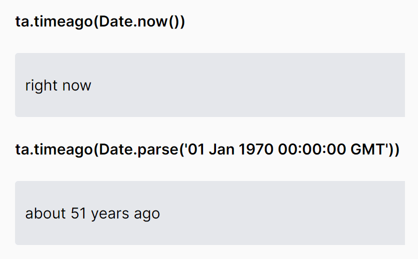

Posted by Navjot singh on Oct 11, 2023
Time Ago Conversion: Transforming Timestamps into Human-Friendly Dates
Time is an ever-present element in the digital world. Whether it's a post on social media, a message in a chat app, or an email, we often come across timestamps like "2 hours ago" or "3 days ago." These convenient time representations, known as "time ago" formats, provide a user-friendly way to understand the recency of an event without delving into the complexities of time zones and date formats.
In this article, we'll explore how to create a "time ago" function in PHP, a versatile language for web development. By the end of this read, you'll have a powerful tool to convert standard timestamps into the "time ago" format, enhancing user experience and simplifying time-based interactions.
Improved User Experience
Users find it easier to understand relate to time then it's expressed in a familiar, natural language format. This can enhance the overall user experience
Clarity and Readability
"Time ago" formats, such as "2 hours ago" or "3 days ago," are more concise and easier to read than raw timestamps. They provide an immediate understanding of when an event occurred.
IRelative Time Perception
Relative time representations make it simpler for users to understand when something happened in relation to the present moment. This can help users informed decisions or prioritize tasks.
Video demo
The Need for Time Ago Conversion
Consider a scenario where you need to display the time of a user's last activity on a website or application. If your users are spread across different time zones, you face the challenge of accurately displaying times that make sense to everyone. A timestamp of "2022-07-07 07:50:09" may look like an arbitrary sequence of numbers to most users.
To address this issue, we can create a "time ago" function that converts timestamps into a format like "2 hours ago" or "3 days ago." This not only makes the information more user-friendly but also eliminates the need to deal with time zone conversions.
function time_ago($timestamp)
{
$time_ago = strtotime($timestamp);
$current_time = time();
$time_difference = $current_time - $time_ago;
$seconds = $time_difference;
$minutes = round($seconds / 60);
$hours = round($seconds / 3600);
$days = round($seconds / 86400);
$weeks = round($seconds / 604800);
$months = round($seconds / 2629440);
$years = round($seconds / 31553280);
if ($seconds <= 60) {
return "just_now";
} else if ($minutes <= 60) {
if ($minutes == 1) {
return "1 " . "minute_ago";
} else {
return "$minutes " . "minutes_ago";
}
} else if ($hours <= 24) {
if ($hours == 1) {
return "1 " . "hour_ago";
} else {
return "$hours " . "hours_ago";
}
} else if ($days <= 30) {
if ($days == 1) {
return "1 " . "day_ago";
} else {
return "$days " ."days_ago";
}
} else if ($months <= 12) {
if ($months == 1) {
return "1 " ."month_ago";
} else {
return "$months " . "months_ago";
}
} else {
if ($years == 1) {
return "1 " ."year_ago";
} else {
return "$years " ."years_ago";
}
}
}
// Example usage:
print_r(time_ago('2022-07-07 07:50:09'));